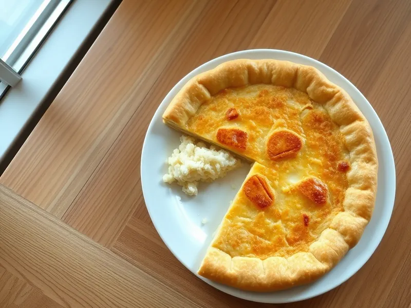

Осетинский пирог с картофелем и сыром
Тонкий дрожжевой пирог с начинкой из картофельного пюре и рассольного сыра, смазанный маслом
130 мин8 порц.408 ккал на порциюБ 14 · Ж 19 · У 45Кавказская кухня
Открыть в приложении: порции, таймеры, список покупок
Продукты на 8 порц.
- Мука пшеничная400 г
- Молоко1,25 стак.
- Дрожжи сухие1,5 ч. л.
- Сахар1 ч. л.
- Соль1 ч. л.
- Растительное масло1 ст. л.
- Картофель3 шт
- Брынза / фета150 г
- Сулугуни150 г
- Сливочное масло60 г
Как готовить
- Растворите дрожжи и сахар в тёплом молоке, через 10 минут добавьте соль, растительное масло и муку. Вымесите мягкое, слегка липкое тесто 7 минут, накройте и оставьте в тепле на 60 минут.
- Отварите очищенный картофель на среднем огне 20-25 минут до мягкости, слейте воду и разомните в пюре без молока. Остудите.
- Натрите брынзу и сулугуни на тёрке, смешайте с картофелем и разделите начинку на 2 шара. Тесто тоже разделите на 2 части.
- Разомните часть теста руками в круг 20 см, положите в центр шар начинки, соберите края к центру мешочком и защипните.
- Переверните швом вниз и аккуратно распластайте ладонями в круг около 30 см толщиной 1 см. Переложите на противень с бумагой и сделайте в центре отверстие для пара.
- Выпекайте каждый пирог 15-20 минут при 200 °C (сильный жар) до румяных пятен на корочке.
- Сразу смажьте горячие пироги растопленным сливочным маслом и сложите стопкой, чтобы они остались мягкими.
Совет. Если брынза очень солёная, замочите её на 30 минут в холодной воде, а картофель не солите совсем.